Holidays Decorations (1988 - 1996)
1988 1989 1990 1991 1992 1993 1994 1995 1996
1988 - Rockville Civic Center Room Decorations Celebrating Chinese New Year
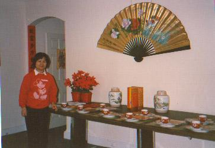
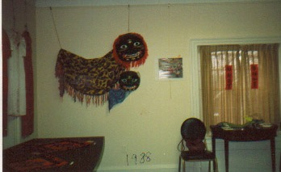
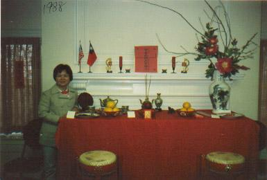
Brigitta Dai poses by the tables and other decorations set up to display a
typical Chinese New Year celebration
1989 - Rockville Civic Center Room Decorations Celebrating Chinese New Year & Chinese Traditional Wedding
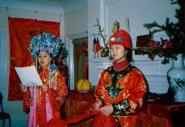
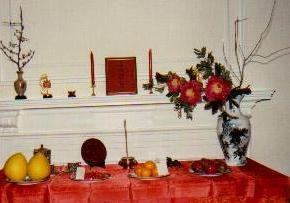
A Chinese wedding is reenacted by Rita & Anita Dai.

1990 - Rockville Civic Center Room Decorations Celebrating Chinese New Year & Chinese Traditional Wedding
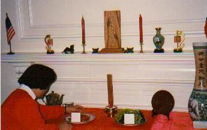  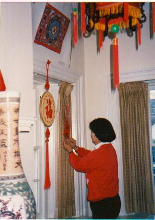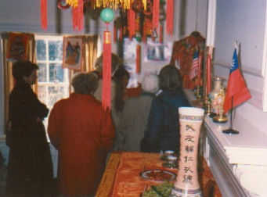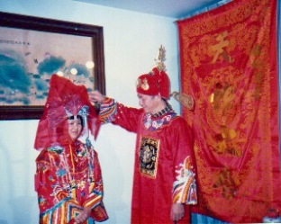
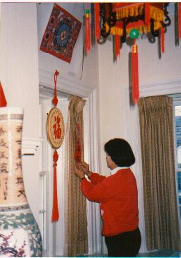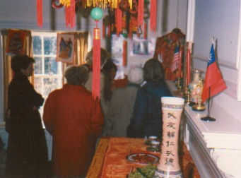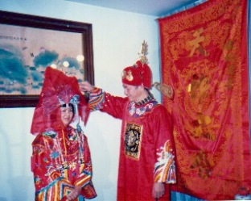
1991 - Rockville Civic Center Room Decorations Celebrating Chinese New Year & Chinese Paper Cutting
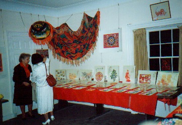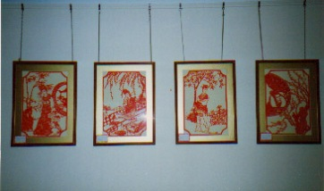
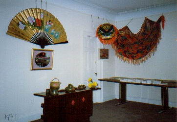
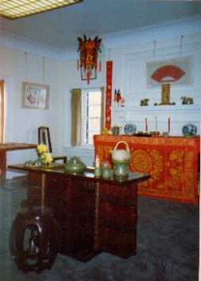
1992 - Rockville Civic Center Room Decorations Celebrating Chinese New Year & Chinese Paper Cutting
 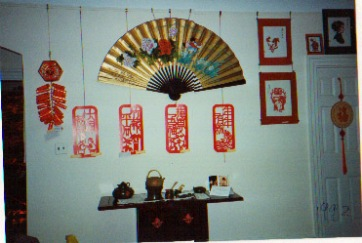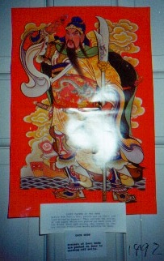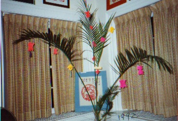
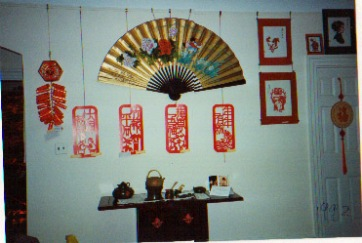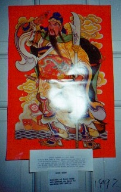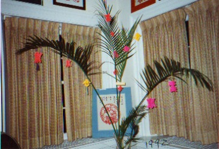
1993 - Rockville Civic Center Room Decorations Celebrating Chinese New Year & Chinese traditional Music Instruments
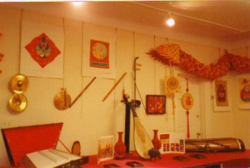
(Top-right) Brigitta & Richard Dai pose by the center table display.
(Bottom-Left) Yingju Tsai and future CAPSA coordinators & tutor Vincent,
Michael, and Elaine Tsai pose by the award winning display.
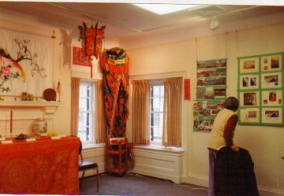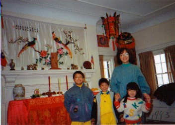
1994 - Rockville Civic Center Room Decorations Celebrating Chinese New Year & Chinese National Opera
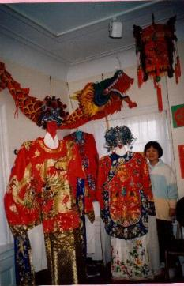
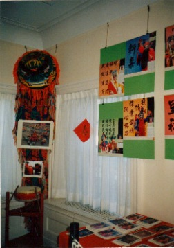
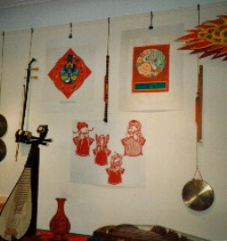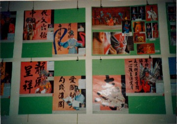
1995 - Rockville Civic Center Room Decorations Celebrating Chinese New Year & Chinese Calligraphy & Paintings
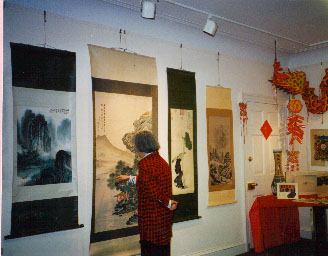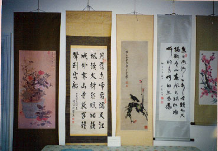 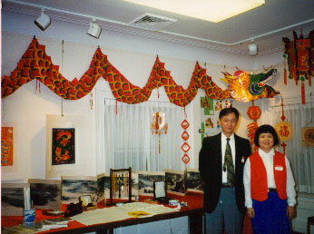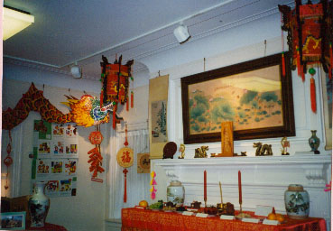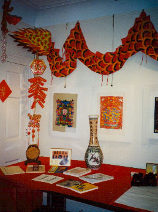
1996 - Rockville Civic Center Room Decorations Celebrating Chinese New Year & Chinese Acupuncture
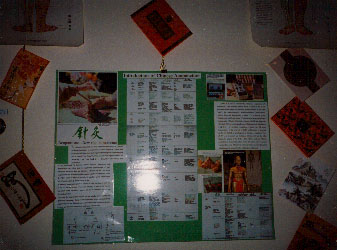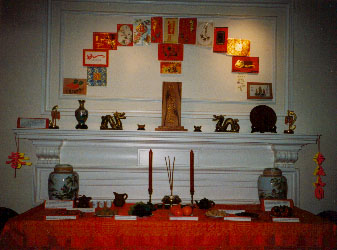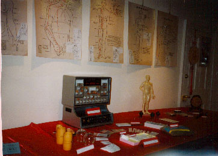